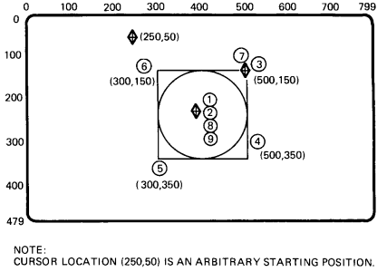

| Chapter 3 | Contents | Chapter 5 |
Position commands let you move the active screen position without writing. There are four basic command options.
These arguments let you move the cursor to a new position on the screen, before you use other ReGIS commands. You can specify the cursor position in one of four formats.
You can use absolute X- and Y-coordinates to define a new cursor position. You can use three forms of this command.
| X and Y Value | X Value Only | Y Value Only |
|---|---|---|
| P[X,Y] | [X] | [,Y] |
where
P identifies a position command.
[X,Y] specify new X- and Y-coordinates.
[X] specifies a new X-coordinate (with the Y-coordinate unchanged).
[,Y] specifies a new Y-coordinate (with the X-coordinate unchanged).
Figure 4-1 shows examples of how to use each form to move the graphics cursor around the screen.
|
||||||
You can use positive (+) and negative (-) values to define a new cursor position. Relative values always start with a plus (+) or minus (-) sign. The terminal adds or subtracts the relative value from the current cursor coordinates. The result is the new cursor position.
A wraparound can occur in relative positioning, but only when you specify a value that exceeds the limits of the 16-bit integer arithmetic available to ReGIS. For example, suppose the cursor position is at [100,100], and you give a command of P[+100,-101]. The new position is a relative value of [200,-1], with no cursor wraparound.
There are eight possible forms of the relative positioning argument, using different combinations of positive (+) and negative (-) coordinates. You can specify one or both coordinates.
| P[+X,+Y] | P[+X,-Y] | P[-X,+Y] | P[-X,-Y] |
| P[+X] | P[-X] | P[,+Y] | P[,-Y] |
Figure 4-2 shows examples of how to use each form to move the graphics cursor around the screen.
|
||||||
You can use a combination of absolute and relative X- and Y-coordinate values to define a new cursor position. There are two forms of this command.
The formats for these commands are a combination of the formats for the absolute and relative positioning arguments. See the two previous sections. Figure 4-3 shows examples of how to use both forms to move the cursor around the screen.
|
||||||
You can use pixel vector (PV) values to define a new cursor position. Chapter 1 describes pixel vectors. Pixel vectors move the cursor relative to the current cursor position.
Each PV value (0 through 7) selects a different direction of movement. Figure 4-4 shows these directions.
This command uses the current PV multiplication factor. There are two ways to change this factor.
The PV factor defined by the temporary write control option only stays in effect until you use a new key letter (including a new P command key letter) or another temporary write control option.
You use the following format for the PV offset positioning argument.
P<PV value>
where
<PV value> is one or more PV values defining movement. These PV values use the current PV multiplication factor in effect.
 |
You use the following format to change the PV multiplication factor with a temporary write control option.
P(W(M<multiplication factor>))<PV value>
where
W identifies a write control option.
M identifies a PV multiplication suboption.
<multiplication factor> is a numeric value to use for the temporary PV multiplication factor.
<PV value> is one or more PV values defining movement. These PV values use the temporary PV multiplication factor.
Figure 4-5 shows examples of how to move the cursor around the screen with pixel vectors. The examples use a temporary write control option to define a PV multiplication factor.
 |
||||||
|
||||||
A position stack is a set of coordinate positions that ReGIS uses in sequence. These options let you move the cursor to several positions in a single command. As ReGIS performs the command, the cursor moves to each position in the stack.
There are two types of position stacks, bounded and unbounded. Both types include at least one start (or begin) command and one end command. However, the start commands work differently in bounded and unbounded position stacks.
You can embed other commands between pairs of start and end commands. For example, you can embed several vector (V) commands between the start and end commands.
You use a bounded position stack to return the cursor position to a specific starting point at the end of the command. The bounded position stack works by pushing the current cursor position onto the stack, then popping the position off where appropriate.
You use the following format for a bounded position stack option.
P(B)<embedded options>(E)
where
(B) saves the current active position. (Pushes the position onto the stack.)
<embedded options> are the position, vector, curve, and other command options you use in the bounded position stack.
(E) returns the active position to the coordinates saved by the last (B) option. (Pops the position off the stack.)
You can save up to 16 positions in a stack. That is, you can use 16 (B)s and 16 corresponding (E)s in a stack. Remember, for each (B) pushing a position onto the stack, there must be a corresponding (E) to pop the position off.
NOTE: The terminal saves position values during bounded and unbounded stack options for position (P) commands and vector (V) commands (Chapter 5). The maximum number of unended, saved positions (including all save commands) is 16. However, for compatibility with other ReGIS products, use a maximum of eight.
Figure 4-6 shows an example of how to build a simple graphic image with a bounded position stack. The example includes vector (V) and curve (C) commands. See Chapters 5 and 6 for information on vector and curve commands.
|  | ||||||
|
||||||
The difference between an unbounded and a bounded position stack is that the active position does not move at the end of an unbounded stack. An unbounded stack begins with an (S) option rather than a (B) option. The (S) pushes a dummy, or nonexistent position onto the position stack. The (E) pops this nonexistent position off the stack, leaving the active position at the position specified before the (E) option.
You use the following format for an unbounded stack command.
P(S)<embedded options>(E)
where
(S) saves a dummy location. (Pushes the dummy location onto the position stack.)
<embedded options> are the position, vector, curve, and other command options you use in the unbounded stack.
(E) pops the dummy position off the stack. The active position does not move.
Figure 4-7 shows an unbounded position stack with the same vector (V) and curve (C) commands used in the bounded position stack in Figure 4-6. Figures 4-6 and 4-7 show the difference in effect between bounded and unbounded stacks.
The unbounded stack option is for symmetry with other command types (such as curve commands) that can use bounded and unbounded stacks.
|
||||||
This option lets you move the graphics cursor from one page to another. You can only use this option when you use a single session on the terminal, not dual sessions. When you use a single session, the terminal has two pages of graphics page memory available, each 800 × 480 pixels.
P(P<0 or 1>)
where
P identifies the select graphics page option.
0 moves the cursor to the first graphics page.
1 moves the cursor to the second graphics page.
The terminal ignores values other than 0 and 1. Both the input cursor and output cursor move to the corresponding position on the selected page.
Entering or exiting ReGIS does not change the currently displayed page. When you enter ReGIS, the currently displayed graphics page is the same as the previously displayed text page. The active graphics page is the same page as the last time you exited ReGIS. If you did not use ReGIS since last resetting the terminal, the active graphics page is the first graphics page.
When you exit ReGIS, the currently displayed text page is the same as the previously displayed graphics page. The active text page is the same page as the last time you used text mode.
When you exit ReGIS, the displayed text page becomes the same as the active text page (if the Page Coupling feature on the Display Set-Up screen is enabled).
Table 4-1 is a summary of the P command arguments, including any default values.
| Argument | Default | Description |
|---|---|---|
| [X,Y] | [0,0] | Cursor positioning with [X,Y] values |
| <PV> | None | Cursor positioning with PV values |
| (W(M<n>)) | 1 | PV multiplier |
| (B) | None | Begin a bounded position stack |
| (S) | None | Start an unbounded position stack |
| (E) | None | End of bounded or unbounded position stack |
| (P<pn>) | None | Select graphics page option |